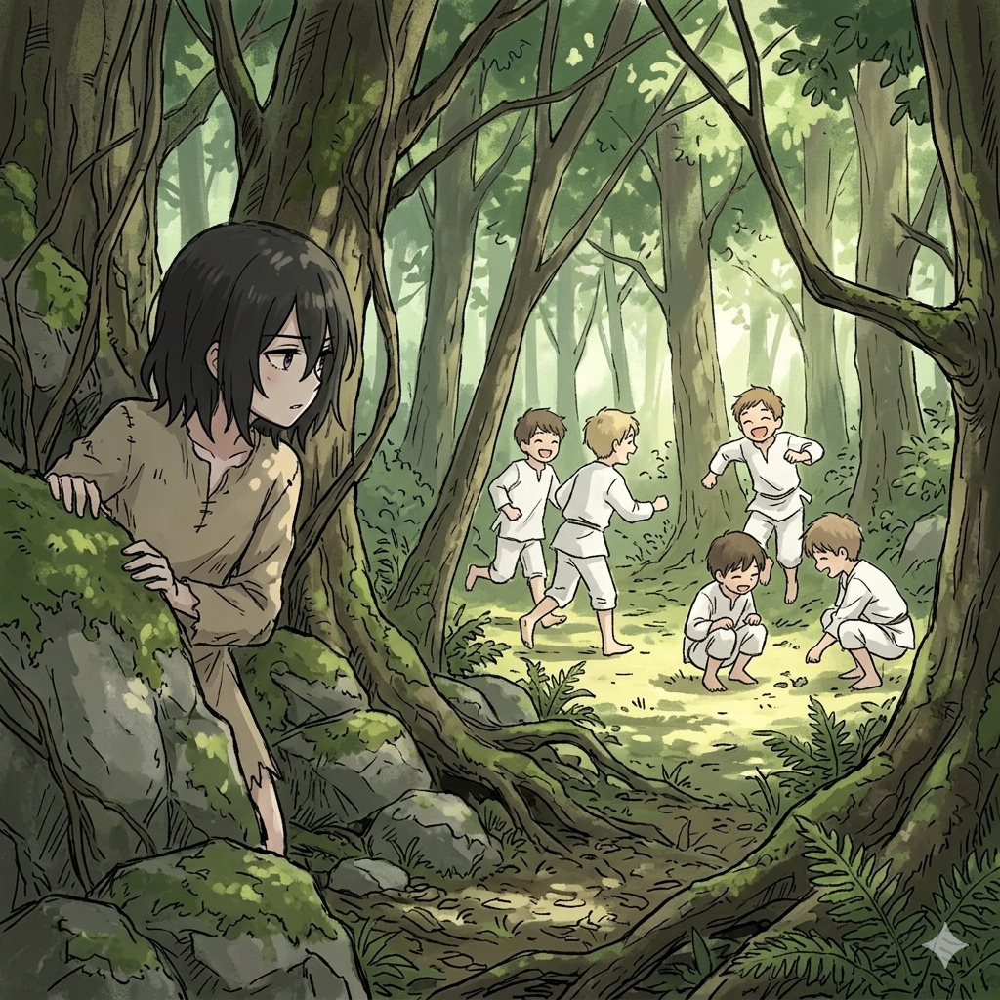

Negro... solo un negro absoluto veia, lo ultimo que recuerdo era mi batalla con aquel muchacho llamado Garfield Tinzel, Mi nombre es Elsa Granhiert y soy una cazadora de entrañas, era muy temida por todo el reino de Lugunica, pero un dia en este vasto negro absoluto, una luz rara aparecio y ante mis ojos se encontraba un bosque verdoso y una corriente de aire se reposaba en mis mejillas.
"Que... ¿Que sucedio?, esto debe ser una broma."
Elsa que antes se encontraba en la Mansion Roswaal, luego un vacio para ahora estar en este bosque, pero instictivamente Elsa se pone en guardia al ver unos niños que corrian.

"¿Unos niños? Usan ropa blanca y parecen estar jugando algo, necesito recolectar mas informacion"
Elsa se acerco con su estilo caracteristico de ser, pero se da cuenta de algo, sus caderas y movimientos son mas torpes, Elsa se da cuenta de que su cuerpo es diferente, se acerca a un estanque y se ve en el reflejo dandose cuenta que es una niña de 9 años
"¿Que me ha sucedido?, soy mas joven."
Un escalofrio sintio Elsa al pensar aquellos recuerdos de su pasado, pero inmediatamente se incorpora y se acerca a los niños
"¿Ehh?... ¿Es una chica nueva?, ¿Te encuentras bien?" Pregunta uno de los chicos mirando con preocupacion a la chica, sin embargo los ojos del chico se desviaron a otro lugar y se dio cuenta que hay otra persona mas.. "¿Oye ese chico viene contigo? ¿Que tiene?"
Tal como escucho esas palabras los ojos de Elsa se fijaron fijamente sobre aquel chico, y su expresion se volvio sadica y retorcida, descubrio dos piezas de informacion. Ella no estaba sola, alguien mas de Lugunica cayo aqui con ella, y segundo esa persona tambien es un niño, aparentemente de 11 años
"Deberiamos llamar a Isabella, el chico no responde y ella se ve muy descuidada" Dice uno de los chicos mientras espera confirmacion de los otros, "Si llevarlos con ella seria lo mejor"
"¿Disculpa chicos, como se llaman?" Pregunta Isabella, Elsa se da cuenta que algo anda mal con ella, pero decide ignorarlo por los momentos
Al pasar de los minutos, el chico decide hablar y se presenta, Subaru Natsuki esta aqui, se da cuenta de su nueva realidad, y al igual con Elsa su forma de caminar es rara, y es como si su cuerpo no se coordinara bien, al pasar ya años con un cuerpo diferente y magicamente tener otro ha de costar. Todos parecen llevarse bien con Subaru Natsuki, pero las chicas que se intentaban acercar a Elsa recibian una mirada fria y vacia, tal parece Subaru no se ha dado cuenta de quien es ella, pero la venganza de Elsa se traza por su mente, aun con ese cuerpo debil, su agilidad y fuerza es mayor que a todos los niños presentes. Sin embargo tiene sus dudas con Isabella, algo de ella no le agrada para nada
"Que fastidio son estos niños, pero ya veran, recolectare toda la informacion que pueda sacar de aqui y veremos quien de aqui tiene las entrañas mas hermosas" Dice Elsa riendo a carcajadas
Los materiales que Elsa encontraba eran inutiles para preparar sus tipicas armas, por mas que buscaba no encontraba algo que le sirva para rebanar entrañas y estomagos, en su busqueda de informacion, Elsa veia a Subaru, Norman, Ray y Emma reunidos, escuchaba palabras como Granja, Demonios, Libertad y Esperanza, no pudo evitar sonreir sadicamente mientras un sin fin de torturas se le ocurrian.
Los dias pasaban y Elsa no les quitaba el ojo de encima, ¿Que haran? ¿Como se prepararan?, la meta de Elsa paso de ver sus entrañas a hacer que su plan fracase, lo sueña y lo anhela. Un dia que los niños se encontraban jugando, Elsa quiso mostrar por primera vez algo de interes, Emma sonrio al ver que por fin Elsa se integraria a los juegos, en el juego de la competencia de velocidad, todos corrieron a su mayor velocidad, pero Emma que iba de primero como siempre es rapidamente dejada atras por Elsa que corre como si tuviera Estamina inlimitada
"Wow Elsa eso fue asombroso, para tener 9 años eres increiblemente rapida"
Elsa no decide responder y simplemente se va del campo de juegos, vio que en terminos de habilidad fisica aun esta muy por encima de todos ellos y eso es informacion importante para irrumpir cualquier plan que ellos tengan, Subaru que se encontraba con Ray le comenta
"Sabes Ray es extraño, sencillamente no paro de dejar de darle vueltas, pero esa niña tiene todas las caracteristicas de una asesina que habia en mi mundo, pero ella fallecio ya hace un año, pero son identicas, hasta en su forma de correr
¿Quien sabe? Quizas revivio... Puff jajaja, tranquilo Subaru, si murio hace un año como dices, no hay de que preocuparse...